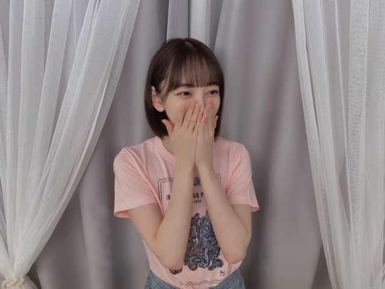
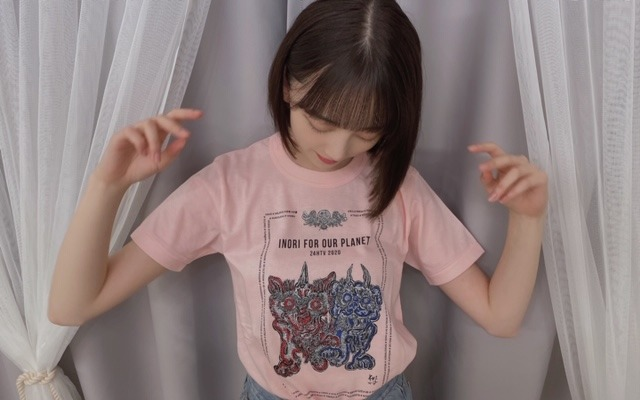

2020/0823Sun24時間テレビ
みてますかー？^ - ^


今日も出させていただきます！
みてね！
Tシャツかわいい！
おそろしましょー！
ではまた^ - ^
2020/08/23 10:36
コメント(283)
ブログ更新ありがとう！
24時間TVお疲れさま
最後まで観るよーーん
では、また今度
更新待ってました〜！
24時間テレビ見たよ〜！！
未央奈ちゃんピンクめっちゃ似合う！
次の更新も待ってるね〜
24時間テレビ見たよ〜！！
未央奈ちゃんピンクめっちゃ似合う！
次の更新も待ってるね〜
未央奈ちゃんブログ更新ありがとうございます 24時間見てますよー
24時間見てますよー 体調壊さないように水分補給してお仕事頑張ってくださいね未央奈ちゃん
体調壊さないように水分補給してお仕事頑張ってくださいね未央奈ちゃん
乃木坂のメンバーの出演している時間帯は視つつも、他は気まぐれな感じです。。(^^;
24時間通して視た試しがない。
24時間通して視た試しがない。
「ゆっくりと咲く花」のＭＶも収録されるなんて
凄いサプライズです。
24時間テレビ見ました、20時からの盆踊りも楽しみです。
そうそう昨日、長良川でも花火上がってました。
未央奈ちゃんが24時間テレビに出てたときです。
凄いサプライズです。
24時間テレビ見ました、20時からの盆踊りも楽しみです。
そうそう昨日、長良川でも花火上がってました。
未央奈ちゃんが24時間テレビに出てたときです。
掘ちゃんの今一番の「隣人」はだれですかね？
24時間テレビ今観てます。
昨日の花火もちょっとじーんでした。
頑張ってね、掘ちゃん！
ハンド ソープ
ソープ
ほうっ～ Ψ(￣∇￣)Ψ
24時間テレビ今観てます。
昨日の花火もちょっとじーんでした。
頑張ってね、掘ちゃん！
ハンド
ほうっ～ Ψ(￣∇￣)Ψ
やほー！
おつかれさまー！ちゃんとみてるよー！(゜▽゜*)
シンクロにシティも世界中の隣人よも良かったよ！
PPAPやyoungmanも楽しそうだったね(*^^*)
あとは盆踊りかな！？
残りもがんばってね～☆
Tシャツ確かに良いねぇ、ピンクか悩む。。(；・∀・)w
おつかれさまー！ちゃんとみてるよー！(゜▽゜*)
シンクロにシティも世界中の隣人よも良かったよ！
PPAPやyoungmanも楽しそうだったね(*^^*)
あとは盆踊りかな！？
残りもがんばってね～☆
Tシャツ確かに良いねぇ、ピンクか悩む。。(；・∀・)w
かわいい〜
今日仕事だった
今年のTシャツ可愛いね
毎年、24時間テレビのTシャツ可愛いよね！
今年のTシャツ可愛いね
毎年、24時間テレビのTシャツ可愛いよね！
更新ありがとうございます！
ピンク色のTシャツ可愛すぎます！！
ピンク色のTシャツ可愛すぎます！！
ブログ更新ありがとう
観てるよー！昨日の衣装も可愛かったね！ピンクとっても似合ってます 楽しみにしてるね。今日も大好きです。
観てるよー！昨日の衣装も可愛かったね！ピンクとっても似合ってます
昨夜の花火とシンクロの『シンクロニシティ』、サプライズでした！
まいやんの生放送でのセンターは、もうテレビでは観られないだろうなぁ、と思っていたので。
良かったです♪☆
まいやんの生放送でのセンターは、もうテレビでは観られないだろうなぁ、と思っていたので。
良かったです♪☆
昨日も今日も見ました。
久しぶりにまいやんセンターのシンクロが見れて最高でした！「世界中の隣人よ」も心に響きました！
この後の盆踊りも楽しみにしてます！
久しぶりにまいやんセンターのシンクロが見れて最高でした！「世界中の隣人よ」も心に響きました！
この後の盆踊りも楽しみにしてます！
ピンクのＴシャツ似合ってる(*^^*)
いつもメンバーと写真撮るときに使っているカメラアプリはなんですか？
おつかれん
お揃いするー
可愛すぎる 見たよー✨
盆踊りの浴衣もすっごく可愛かった
本当に憧れです
未央奈ちゃんみたいに可愛くなれるようになりたい！
いつもブログありがとう
盆踊りの浴衣もすっごく可愛かった
本当に憧れです
未央奈ちゃんみたいに可愛くなれるようになりたい！
いつもブログありがとう
こんばんは。ブログ更新ありがとうございます。
24時間TV,実は一度も見た事が無いんですよね。もう何十年も続いている番組なんですけどね。
こうやって写真を並べてみると未央奈ちゃんも顔小さいですね～。髪形も良く似合っていてとても可愛いです。やっぱり人気があるのも頷けます。
ではまた。
24時間TV,実は一度も見た事が無いんですよね。もう何十年も続いている番組なんですけどね。
こうやって写真を並べてみると未央奈ちゃんも顔小さいですね～。髪形も良く似合っていてとても可愛いです。やっぱり人気があるのも頷けます。
ではまた。
未央奈！
仕事で見れなかったよー…
みたかった…
ではでは
仕事で見れなかったよー…
みたかった…
ではでは
こんばんは 未央奈
未央奈
ブログ更新お疲れ様m(_ _)m
24時間テレビ見ていません(´・ω・｀)
24時間テレビ見られません(´・ω・｀)
おやすみおな
良い夢を
また明日
ブログ更新お疲れ様m(_ _)m
24時間テレビ見ていません(´・ω・｀)
24時間テレビ見られません(´・ω・｀)
おやすみおな
良い夢を
また明日
未央奈ちゃん、こんばんは♪
24時間テレビは未央奈ちゃんを見れませんでした。
未央奈ちゃん、ごめんなさい。
昨日の21時頃に真夏ちゃんを見ました。
土屋さんが走っているシーンを見ました。
明日の午前0時の乃木坂工事中を
楽しみにしています。
僕はテレビは40分ぐらい視聴したら
横になって休みます。
今回はここまでにするね☆
24時間テレビは未央奈ちゃんを見れませんでした。
未央奈ちゃん、ごめんなさい。
昨日の21時頃に真夏ちゃんを見ました。
土屋さんが走っているシーンを見ました。
明日の午前0時の乃木坂工事中を
楽しみにしています。
僕はテレビは40分ぐらい視聴したら
横になって休みます。
今回はここまでにするね☆
こんばんはお疲れさま☺
今日は仕事で帰ってから見てますよ☺
夕方笑点のコーナーからかな？
堀ちゃん24テレビTシャツ可愛いね。
ピンク似合うね☺
俺も過去に何回かチャリティーTシャツ買って今もたまに着てるよ☺
ちなみに選ぶのはあればオレンジです。
今年は販売していたんかな？
募金は今年もしたよ！
気持ちやからね✨
今年は特にこんな時やから
まだまだ続くと思うこんな時やからこそ
少しでも気持ちひとつにしたり、なりたいね☺
チームQのメンバーの走りも凄いね✨
高橋尚子さん頭が下がります。
メンバーね、土屋太凰ちゃん、吉田沙保里さん、陣内貴美子さん、松本薫さん、頭が下がります
なかなか出来んよ。
乃木坂のメンバーも頑張ってるみたいでなんか嬉しいです☺
昨日のシンクロにシティの時、いろんな想いが俺の中でもあってめっちゃ泣いたよ。
喜怒哀楽っていうか感動しぃやから(笑)
ではではまたね✨
体調ホンマに気をつけてくださいね✨
ほなね、堀ちゃん☺
今日は仕事で帰ってから見てますよ☺
夕方笑点のコーナーからかな？
堀ちゃん24テレビTシャツ可愛いね。
ピンク似合うね☺
俺も過去に何回かチャリティーTシャツ買って今もたまに着てるよ☺
ちなみに選ぶのはあればオレンジです。
今年は販売していたんかな？
募金は今年もしたよ！
気持ちやからね✨
今年は特にこんな時やから
まだまだ続くと思うこんな時やからこそ
少しでも気持ちひとつにしたり、なりたいね☺
チームQのメンバーの走りも凄いね✨
高橋尚子さん頭が下がります。
メンバーね、土屋太凰ちゃん、吉田沙保里さん、陣内貴美子さん、松本薫さん、頭が下がります
なかなか出来んよ。
乃木坂のメンバーも頑張ってるみたいでなんか嬉しいです☺
昨日のシンクロにシティの時、いろんな想いが俺の中でもあってめっちゃ泣いたよ。
喜怒哀楽っていうか感動しぃやから(笑)
ではではまたね✨
体調ホンマに気をつけてくださいね✨
ほなね、堀ちゃん☺
未央奈さんブログ更新してくれてありがとうございます。モバメ今日は無いのね、昨日のシンクロニシティ見たよ白いドレス可愛い❤️かった。風邪気味なので寝てしまい世界中の隣人は見れなかったけど僕は乃木坂46が24時間テレビに出演する事が快挙だと思います。凄い有名人になったね。未央奈さんのピンクのTシャツは24時間テレビのチャリティーのTシャツ だね。ボブ未央奈さん大好き ♥️❤️です。また未央奈さんモバメ待ってるよ。
未央奈ちゃん。ブログ更新ありがとう！Tシャツ 未央奈にしては、ちょっと、変わった色合いです。薄いピンク色？似合っています。24時間TVここ何年間は、見てないなあ？
見てるよ！
未央奈ちゃんこんばんは！今観てます‼ありがとうございます！頑張ります‼頑張って下さい。頑張ります‼今日から頑張ります‼
ブログ更新ありがと〜！！
世界中の隣人よ観ました〜！
歌詞がとっても深くてとても元気が出ます
未央奈ちゃんお疲れ様〜！！
世界中の隣人よ観ました〜！
歌詞がとっても深くてとても元気が出ます
未央奈ちゃんお疲れ様〜！！
見れてなくて寂しい
でも心の中で応援してるよ！！
とにかく可愛い未央奈ちゃんをこれからも応援させてください！
Tシャツ似合ってます
掛橋ちゃんのブログに未央奈ちゃんの話題書いてあって嬉しくなりました
出番終わったらゆっくり休んでね
でも心の中で応援してるよ！！
とにかく可愛い未央奈ちゃんをこれからも応援させてください！
Tシャツ似合ってます
掛橋ちゃんのブログに未央奈ちゃんの話題書いてあって嬉しくなりました
出番終わったらゆっくり休んでね
こんにちは
24時間テレビ観てますよー♪
夏祭りも盆踊りも見れないので、
番組を観て気分を味わってます☆
ライブもとっても感動しました！
ライブも打ち上げ花火の様です✨
Tシャツ姿も可愛いらしいです！
お揃っちで着たくなりましたよ✌
気持ちもお揃いにしたいです～♡☺
24時間テレビ観てますよー♪
夏祭りも盆踊りも見れないので、
番組を観て気分を味わってます☆
ライブもとっても感動しました！
ライブも打ち上げ花火の様です✨
Tシャツ姿も可愛いらしいです！
お揃っちで着たくなりましたよ✌
気持ちもお揃いにしたいです～♡☺
まぢかゎいくてむり。。。
しんだ
しんだ
未央奈ちゃん 、こんばんは〜
、こんばんは〜 。
。
24時間テレビ ご出演、お疲れ様でした
ご出演、お疲れ様でした

 。
。
Tシャツ 、可愛いね
、可愛いね 。勿論、未央奈ちゃんが着てるからこそ
。勿論、未央奈ちゃんが着てるからこそ かもしれないけど。
かもしれないけど。
それとビッグニュース 。名曲、ゆっくりと咲く花
。名曲、ゆっくりと咲く花 。(祝)、9/9発売CD
。(祝)、9/9発売CD 収録。絶対買います。物凄く、感慨深いです
収録。絶対買います。物凄く、感慨深いです 。
。
24時間テレビ
Tシャツ
それとビッグニュース
見ましたとても可愛かったです！！
ぐるり音頭とても上手でした！！
ぐるり音頭とても上手でした！！
乃木坂46メンバー24時間テレビお疲れ様ー！！
みんなの歌で元気もらいました！
皆さんも体調に気おつけて下さい！
みんなの歌で元気もらいました！
皆さんも体調に気おつけて下さい！
すいません録画してます。
未央奈ちゃんブログ更新ありがとう！！
24時間テレビお疲れ様です！
昨日のシンクロニシティは白衣装がとっても素敵でキラキラしてて花火と一緒に抜かれる度にかわいい〜！！って声上げてました。笑
今日は一日模試でリアタイは出来なかったんだけど、お姉ちゃんが録画してくれていたので今見れました！！
浴衣と髪飾りすごく似合ってます⸜❤︎⸝
あと募金したあとの動画も拝見しました！！
映画にハマってるってずっと言ってて未央奈ちゃんがオススメしてくれたものを少しずつですが見ています！
たくさん未央奈ちゃんの笑顔とか言動に救われてるなぁってあためて思いました！
乃木中も楽しみです！
いつもありがとうございます
だいすき！
24時間テレビお疲れ様です！
昨日のシンクロニシティは白衣装がとっても素敵でキラキラしてて花火と一緒に抜かれる度にかわいい〜！！って声上げてました。笑
今日は一日模試でリアタイは出来なかったんだけど、お姉ちゃんが録画してくれていたので今見れました！！
浴衣と髪飾りすごく似合ってます⸜❤︎⸝
あと募金したあとの動画も拝見しました！！
映画にハマってるってずっと言ってて未央奈ちゃんがオススメしてくれたものを少しずつですが見ています！
たくさん未央奈ちゃんの笑顔とか言動に救われてるなぁってあためて思いました！
乃木中も楽しみです！
いつもありがとうございます
だいすき！
みおな、こんばんは！更新ありがとう。 近況報告ありがとうございます。 では、毎日みおなに良いこと沢山ありますように！ おやすみおな！！
未央奈ブログ更新ありがとう！
２４時間テレビのシンクロニシティと花火めっちゃ良かったです！
体調にお気をつけて。
２４時間テレビのシンクロニシティと花火めっちゃ良かったです！
体調にお気をつけて。
24時間テレビお疲れ
盆踊り、花火とのコラボ最高だった！
浴衣姿、可愛かったよ
盆踊り、花火とのコラボ最高だった！
浴衣姿、可愛かったよ
未央奈可愛い〜
大好きです
仕事の都合上見てないですが
応援してまーす
大好きです
仕事の都合上見てないですが
応援してまーす
お疲れ様です!
更新ありがとう❤
Tシャツのピンク似合っててかわいい～❤
２４時間テレビずっとは見れてないけど「世界中の隣人よ」は見れました。
またね。
Tシャツのピンク似合っててかわいい～❤
２４時間テレビずっとは見れてないけど「世界中の隣人よ」は見れました。
またね。
未央奈～ こんにちは
ブログ更新ありがとうございます。
「２４時間テレビ」おつかれさまでした。まいやんと一緒にパフォーマンスできたことも何よりでしたね。
「世界中の隣人よ」あの場で聴くと、ホントぴったりの曲ですね。あのあとの「ヤングマン」も、良かったです。
「盆踊り」の浴衣姿も良かったし、「負けないで」「愛は勝つ」そして最後の「サライ」、盛り上がっていましたね。何より、高橋尚子選手の走りには、感動しましたね。さすが、同じ岐阜県の出身。
ところで、９月発売のＭＶ集に「ゆっくりと咲く花」が収められることが発表になりました。これはもう感激以外の何物でもありません。じっくり聞かせていただきます。
ブログ更新ありがとうございます。
「２４時間テレビ」おつかれさまでした。まいやんと一緒にパフォーマンスできたことも何よりでしたね。
「世界中の隣人よ」あの場で聴くと、ホントぴったりの曲ですね。あのあとの「ヤングマン」も、良かったです。
「盆踊り」の浴衣姿も良かったし、「負けないで」「愛は勝つ」そして最後の「サライ」、盛り上がっていましたね。何より、高橋尚子選手の走りには、感動しましたね。さすが、同じ岐阜県の出身。
ところで、９月発売のＭＶ集に「ゆっくりと咲く花」が収められることが発表になりました。これはもう感激以外の何物でもありません。じっくり聞かせていただきます。
ブログ更新ありがとう！最近暑くなってきたし、お互い体調に気を付けて頑張ろう！！次も絶対見るからね！
こんばんは
24時間テレビお疲れ様でした！
忙しい中ブログ更新ありがとう
昨日の花火とシンクロニシティ、今日の夜の盆踊りとエンディングで歌っているの見たよ^ ^
浴衣とても似合っていた
41人動画リレーも出てたね^ ^
世界中の隣人とか見逃してしまった所は後から動画探してじっくり見るね。
本当にお疲れ様でした！！
24時間テレビお疲れ様でした！
忙しい中ブログ更新ありがとう
昨日の花火とシンクロニシティ、今日の夜の盆踊りとエンディングで歌っているの見たよ^ ^
浴衣とても似合っていた
41人動画リレーも出てたね^ ^
世界中の隣人とか見逃してしまった所は後から動画探してじっくり見るね。
本当にお疲れ様でした！！
未央奈更新ありがとう！！
生では見れなかったけど、後から見てめちゃめちゃ良かった！！
本当にお疲れ様です！
大好き！
生では見れなかったけど、後から見てめちゃめちゃ良かった！！
本当にお疲れ様です！
大好き！
こんにちは‼︎
ブログ更新、ありがとうございます♪
24時間テレビでのパフォーマンス、観ましたよ‼︎
『シンクロニシティ』は、全国の花火師さんとの贅沢なコラボでしたね♪
わがままを言えば、花火もじっくり、乃木坂のパフォーマンスもじっくり見たかったけど…
乃木坂のことをよく知らない人が、花火をきっかけに乃木坂の素晴らしさを知ることができると考えれば、いい面もあるのかもしれません♪
そして、『世界中の隣人よ』。
この時期に、この曲が持つメッセージは、やっぱり胸を打ちますね。
多くの人にその想いが届けばいいなって思います…‼︎
最後の『ぐるり音頭』も、皆さんの浴衣姿が可愛らしかった♪
どんな時も前向きに、明るい気持ちで過ごすことが大事だなって思いました‼︎
そして、話は変わりますが…
『ゆっくりと咲く花』のMV集収録、おめでとうございます‼︎
2期生の想いがたくさん詰まったこの曲。
乃木坂のホームページにも、『幻の1曲』という紹介のされ方をしてましたね♪
配信ライブの映像が、そのままMVとなるのか、それとも新たに撮り直したり、編集し直したりしたものがあるのか。
いずれにしろ、楽しみにしてます♪
さて、猛暑は一旦収まりましたが、集中豪雨があったり、なかなか油断できない天候が続いてますね。
急激な気温の変化は体に大きな負担をかけるので、体調を崩すことのないよう、くれぐれも体調管理には気をつけて…‼︎
ではでは、また。
明日も未央奈にとっていい1日になりますように♪
ブログ更新、ありがとうございます♪
24時間テレビでのパフォーマンス、観ましたよ‼︎
『シンクロニシティ』は、全国の花火師さんとの贅沢なコラボでしたね♪
わがままを言えば、花火もじっくり、乃木坂のパフォーマンスもじっくり見たかったけど…
乃木坂のことをよく知らない人が、花火をきっかけに乃木坂の素晴らしさを知ることができると考えれば、いい面もあるのかもしれません♪
そして、『世界中の隣人よ』。
この時期に、この曲が持つメッセージは、やっぱり胸を打ちますね。
多くの人にその想いが届けばいいなって思います…‼︎
最後の『ぐるり音頭』も、皆さんの浴衣姿が可愛らしかった♪
どんな時も前向きに、明るい気持ちで過ごすことが大事だなって思いました‼︎
そして、話は変わりますが…
『ゆっくりと咲く花』のMV集収録、おめでとうございます‼︎
2期生の想いがたくさん詰まったこの曲。
乃木坂のホームページにも、『幻の1曲』という紹介のされ方をしてましたね♪
配信ライブの映像が、そのままMVとなるのか、それとも新たに撮り直したり、編集し直したりしたものがあるのか。
いずれにしろ、楽しみにしてます♪
さて、猛暑は一旦収まりましたが、集中豪雨があったり、なかなか油断できない天候が続いてますね。
急激な気温の変化は体に大きな負担をかけるので、体調を崩すことのないよう、くれぐれも体調管理には気をつけて…‼︎
ではでは、また。
明日も未央奈にとっていい1日になりますように♪
堀ちゃん！更新ありがとう！！
24時間テレビ見たよ！！
堀ちゃんもしっかり見つけました！！
パフォも良かったです！
ピンクTシャツ似合ってる！
生誕Tも楽しみに待ってますね！！
しっかり休んで
これからも頑張って ！！
では！
次回の更新も楽しみに待ってます！！
おやすみおな〜〜！
24時間テレビ見たよ！！
堀ちゃんもしっかり見つけました！！
パフォも良かったです！
ピンクTシャツ似合ってる！
生誕Tも楽しみに待ってますね！！
しっかり休んで
これからも頑張って ！！
では！
次回の更新も楽しみに待ってます！！
おやすみおな〜〜！
その髪型一番可愛いよ。うん。


なんかお母さんが24時間テレビのTシャツ買ってきてたんだけど未央奈とお揃いがいいからピンク貰った！